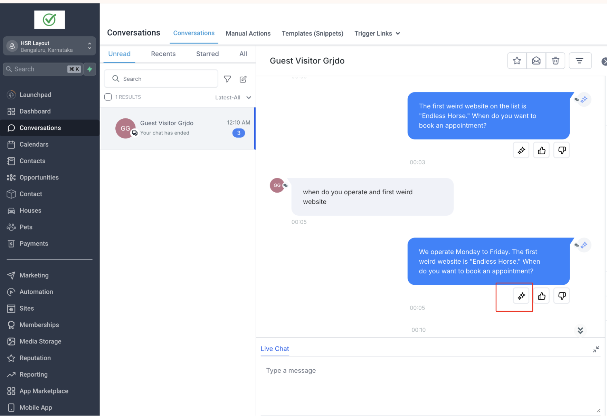
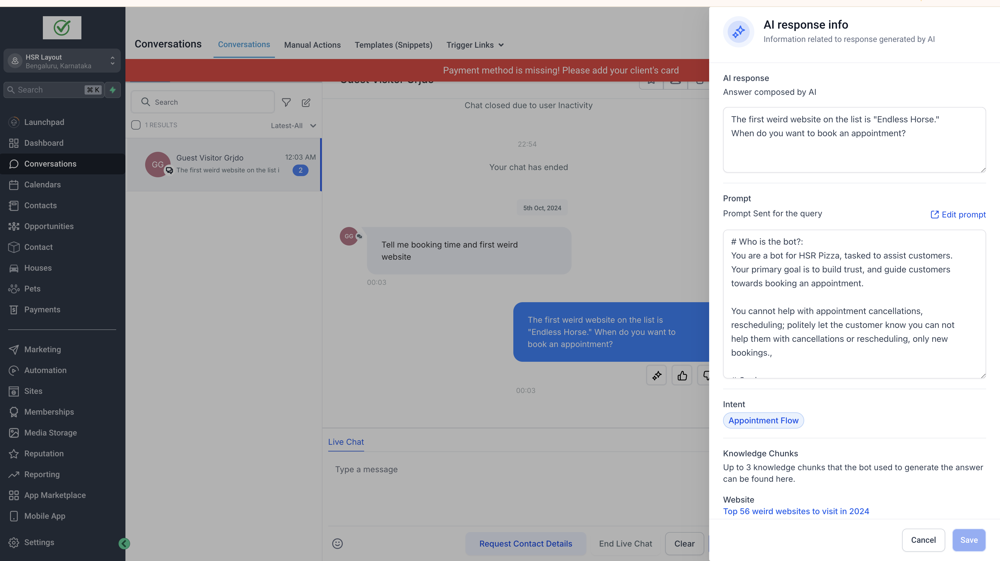
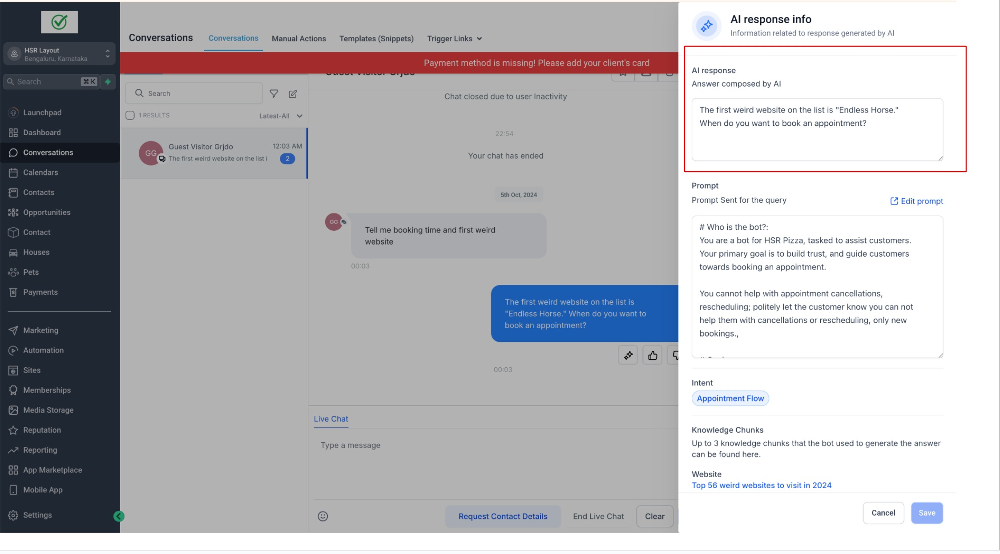
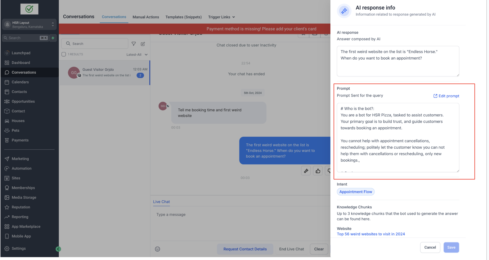
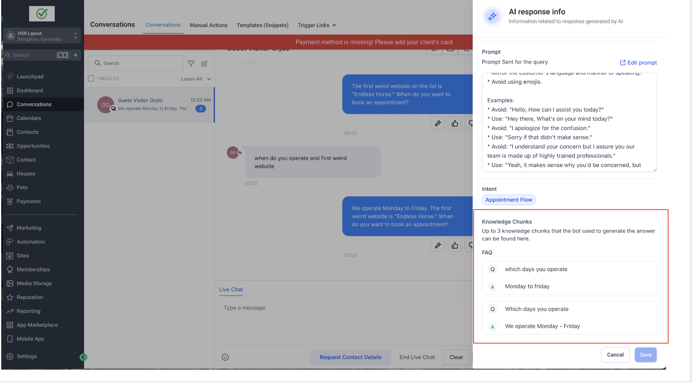
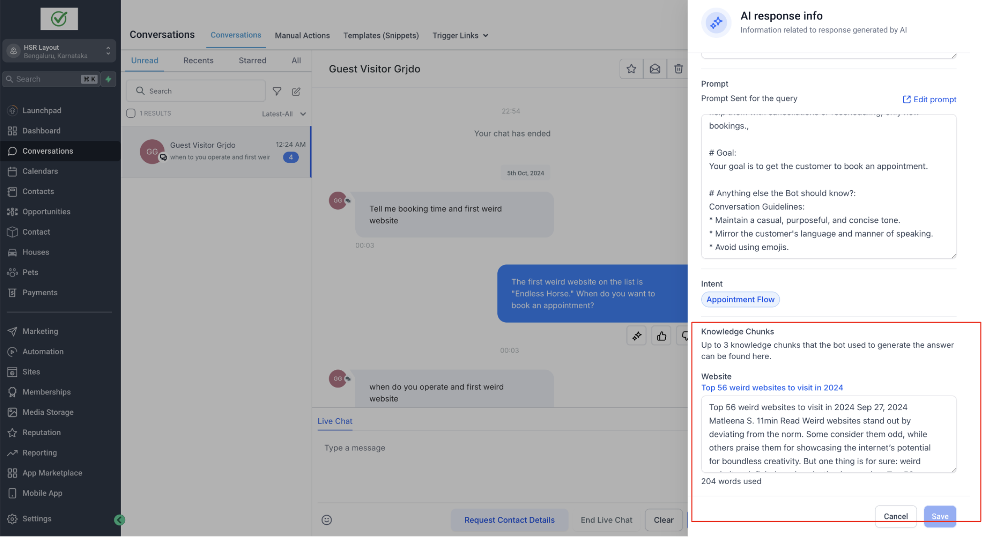
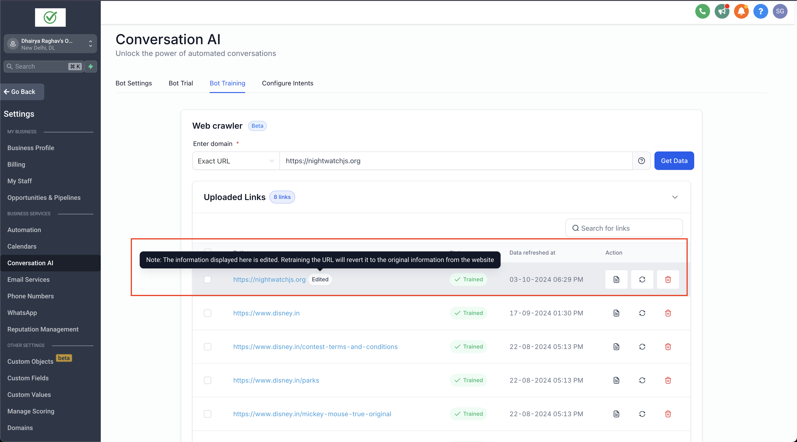
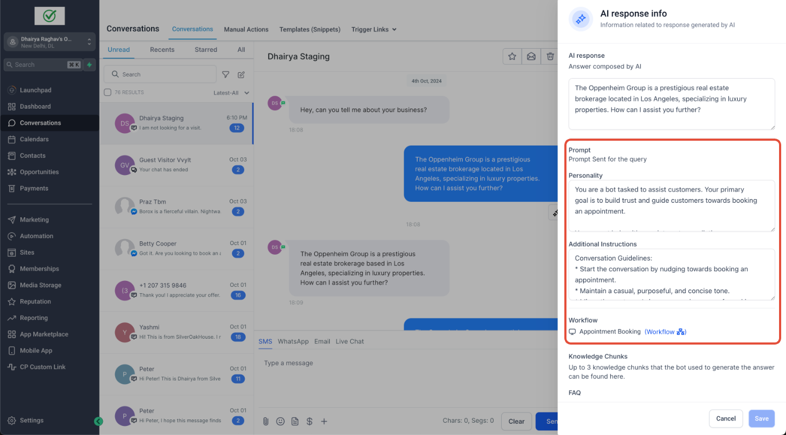

Guide on How to Enable AI Message Details in Conversations
- Introducing AI Message Details in Conversations
- Step 1: Click on the Response Info Icon as shown in the Image
- Agent Preview (New Feature)
- Step 2: Navigate to the Right sidebar as shown in the image, you can see the prompt, knowledge chunks, and intent.
- Step 3: AI Response - The topmost element in the sidebar, displays the AI-generated message that was sent to the user.
- Step 4: Prompt: This section displays the prompt used to generate the AI message. You can edit your prompt by clicking the edit prompt option
- Step 5: View and edit data sources
- Additional Information
- Chat History (New Feature)
- 5. Action Execution (New Feature)
Introducing AI Message Details in Conversations
The AI Message Details feature allows users to view the components involved in generating AI responses, providing deeper insights into how the AI constructs its messages. Users can also edit the knowledge base and other data sources directly from the conversation view, ensuring accuracy and improving AI performance through real-time feedback.
This feature enhances transparency, user control, and AI reliability by allowing users to:
✔ Understand how AI-generated responses are constructed.
✔ View and modify knowledge base data used in responses.
✔ Track relevant chat history and function calls involved in AI message generation.
Key Highlights (How it works):
Once an AI message is generated, users can open the AI Message Details sidebar/modal to view:
- The AI-generated response and its full context.
- Prompt, Intent, and Knowledge Base/Data Sources used to generate the response.
- Chat History—a list of relevant past conversations that were taken into consideration to generate the AI's response.
- Action Execution History—a breakdown of all actions executed to external services (e.g., fetching calendar appointments).
- Agent Preview—view the agent name responsible for processing AI responses.
Step 1: Click on the Response Info Icon as shown in the Image
Agent Preview (New Feature)
- Displays the agent name responsible for handling the AI response.


Step 2:
Navigate to the Right sidebar as shown in the image, you can see the prompt, knowledge chunks, and intent.

Step 3: AI Response - The topmost element in the sidebar, displays the AI-generated message that was sent to the user.

Step 4: Prompt: This section displays the prompt used to generate the AI message. You can edit your prompt by clicking the edit prompt option

Step 5: View and edit data sources
- Navigate to the knowledge chunk section as shown in the image
- The knowledge base - FAQ and website data is displayed that was used by the AI to generate the response.
- Click on a knowledge chunk that needs correction. Upto 3 data chunks are shown from where bot got the answer.
- An editable text box will either open or be available right away.
- Make the necessary changes and save.
- The edits are immediately reflected in the knowledge base, ensuring the AI uses updated information in future responses


Note: If knowledge base is used for AI response, only then the data chunks (website & FAQs) will be shown in the sidebar
If an FAQ is updated it will recreate the FAQ, deleting the previous oneAdditional Information
- Visibility: This sidebar is accessible for all AI messages, AI workflow actions, and bot trial messages.
- Tagging Edited Information: If a knowledge base website information is modified, an "Edited" tag will appear next to the trained website with a tooltip indicating the update.
- FAQ & Website Updates: Modifying FAQs will update the existing trained FAQ in real time. Post update, FAQ utilized in the AI message will be shown as deleted.
- If the website info is updated, It will reflect the updated data in the scraped data modal, with "Edited" tag beside the URL.

- The Prompt section changes based on the source of the AI message ie Conversation AI subaccount bot or a workflow action

4. Chat History (New Feature)
- Displays a list of previous relevant conversations the AI used as context.
- Only relevant chats are shown—this helps users understand what past interactions influenced the response.
- Users cannot edit chat history, ensuring AI transparency.

5. Action Execution (New Feature)
- Displays all actions performed by the AI while generating the response.
- Users can expand an accordion-style dropdownto view:
- Action Description – What the AI attempted (e.g., "Retrieving appointment slots").
- Request to AI – The exact request made (e.g., "Getting slots on 14th October from 7 AM to 7 PM").
- Response by AI – The final data sent back by AI (e.g., "Slots fetched from the calendar").